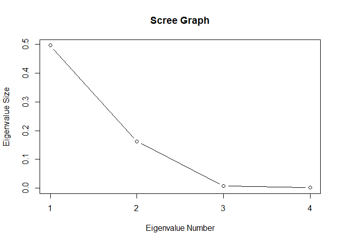

Factor analysis is a controversial technique that represents the variables of a dataset \(y_1, y_2, \cdots, y_p\) as linearly related to random, unobservable variables called factors, denoted \(f_1, f_2, \cdots, f_m\) where \((m < p)\). The factors are representative of 'latent variables' underlying the original variables. The existence of the factors is hypothetical as they cannot be measured or observed. Thus factor analysis remains controversial among statisticians (Rencher, 2002, pp. 443) and continues to be heavily researched.
The goal of factor analysis, similar to principal component analysis, is to reduce the original variables into a smaller number of factors that allows for easier interpretation. PCA and factor analysis still defer in several respects. One difference is principal components are defined as linear combinations of the variables while factors are defined as linear combinations of the underlying latent variables.
Factor Analysis
As mentioned, the factor analysis model is a linear combination of the underlying latent variables, \(f_1, f_2, \cdots, f_m\), that are hypothetical in nature and may not actually exist. For the variables in any of the observation vectors in a sample, the model is defined as:
Where \(\mu\) is the mean vector and \(\epsilon\) is a random error term to show the relationship between the factors is not exact. There are several assumptions that must be made regarding the relationships of the factor model described above.
-
Assume the unobservable factors (latent variables) are independent of each other and of the error terms. For the factors \(j = 1, 2, \cdots, m\), the expected value of the \(j\)th factor is \(0\), \(E(f_j) = 0\). The variance of the factor model is \(1\), \(var(f_j) = 1\), and the covariance of two factor models \(f_j\) and \(f_k\) is \(0\), \(cov(f_j, f_k) = 0\) where \(j \neq k\).
-
Assume the error terms \(\epsilon_i\) are independent of each other. Thus, \(E(\epsilon) = 0\), \(var(\epsilon_i) = \psi_i\), and \(cov(\epsilon_i, \epsilon_j) = 0\).
-
The covariance of the error terms \(\epsilon_i\) and the factor \(f_j\) is \(0\), \(cov(\epsilon_i, f_j) = 0\).
Note the assumption \(cov(\epsilon_i, \epsilon_j) = 0\) implies the factors represent all correlations among the observation vectors \(y\). Thus another difference that separates PCA and factor analysis is that factor analysis accounts for the covariances of correlations among the variables while PCA explains the total variance. With the assumptions made above, the variance of \(y_i\) can be expressed as:
Which can be expressed more compactly in matrix notation:
We therefore have a partitioning of the variance of the observation vector \(y_i\) into a component due to the common factors, which is called the communality and another called the specific variance. Communality is also referred to as common variance and \(\psi_i\) is also known as specificity, unique or residual variance. The factors are grouped into a new term denoting the communality, \(h^2_i\), with the error term \(\psi_i\) representing the specific variance:
Which is the communality plus the specific variance.
It must be noted that factor analysis can fail to fit the data; however, a failed fit can indicate that it is not known how many factors there should be and what the factors are.
Estimation of Factor Loadings and Communalities with the Principal Component Method
There are several methods for estimating the factor loadings and communalities, including the principal component method, principal factor method, the iterated principal factor method and maximum likelihood estimation. The principal component method is one of the most common approaches to estimation and will be employed on the rootstock data seen in previous posts.
The principal component method is rather misleading in its naming it that no principal components are calculated. The approach of the principal component method is to calculate the sample covariance matrix \(S\) from a sample of data and then find an estimator, denoted \(\hat{\Lambda}\) that can be used to factor \(S\).
Another term, \(\Psi\), is added to the estimate of \(S\), making the above \(S = \hat{\Lambda} \hat{\Lambda}' + \hat{\Psi}\). \(\hat{\Psi}\) is a diagonal matrix of the specific variances \((\hat{\psi_1}, \hat{\psi_2}, \cdots, \hat{\psi_p})\). \(\Psi\) is estimated in other approaches to factor analysis such as the principal factor method and its iterated version but is excluded in the principal component method of factor analysis. The reason for the term's exclusion is since \(\hat{\Psi}\) equals the specific variances of the variables, it models the diagonal of \(S\) exactly.
Spectral decomposition is employed To factor \(S\) into:
Where \(C\) is an orthogonal matrix of the normalized eigenvectors of \(S\) as columns and \(D\) is a diagonal matrix with the diagonal equaling the eigenvalues of \(S\). Recall that all covariance matrices are positive semidefinite. Thus the eigenvalues must be either positive or zero which allows us to factor the diagonal matrix \(D\) into:
The above factor of \(D\) is substituted into the decomposition of \(S\).
Then rearranging:
Which yields the form \(S = \hat{\Lambda} \hat{\Lambda}'\). Since we are interested in finding \(m\) factors in the data, we want to find a \(\hat{\Lambda}\) that is \(p \times m\) with \(m\) smaller than \(p\). Thus \(D\) can be defined as a diagonal matrix with \(m\) eigenvalues (making it \(m \times m\)) on the diagonal and \(C\) is therefore \(p \times m\) with the corresponding eigenvectors, which makes \(\hat{\Lambda}\) \(p \times m\). There are numerous ways to select the number of factors, some of which include finding the number of eigenvalues greater than the average eigenvalue or plotting a scree plot.
Principal Component Method of Factor Analysis in R
The following example demonstrates factor analysis using the covariance matrix using the rootstock data seen in other posts. As mentioned in several of those posts, the measurements of the variables are not commensurate and thus using the covariance matrix for factor analysis (or PCA) does not make intuitive sense. In most cases, factoring the correlation matrix is recommended and is, in fact, more straightforward than using the covariance matrix as \(R\) does not need to be decomposed into \(CDC'\) beforehand. The correlation matrix \(R\) of the data is employed for factor analysis in a follow-up post.
The rootstock data contains growth measurements of six different apple tree rootstocks from 1918 to 1934 (Andrews and Herzberg 1985, pp. 357-360) and were obtained from the companion FTP site of the book Methods of Multivariate Analysis by Alvin Rencher. The data contains four dependent variables as follows:
- trunk girth at four years (mm \(\times\) 100)
- extension growth at four years (m)
- trunk girth at 15 years (mm \(\times\) 100)
- weight of tree above ground at 15 years (lb \(\times\) 1000)
Load the data and name the columns.
root <- read.table('ROOT.DAT', col.names = c('Tree.Number', 'Trunk.Girth.4.Years', 'Ext.Growth.4.Years', 'Trunk.Girth.15.Years', 'Weight.Above.Ground.15.Years'))
Find the covariance matrix \(S\) with the cov() function.
S <- cov(root[,2:5])
S
## Trunk.Girth.4.Years Ext.Growth.4.Years
## Trunk.Girth.4.Years 0.008373360 0.04753083
## Ext.Growth.4.Years 0.047530829 0.34771174
## Trunk.Girth.15.Years 0.018858555 0.14295747
## Weight.Above.Ground.15.Years 0.009055532 0.07973026
## Trunk.Girth.15.Years
## Trunk.Girth.4.Years 0.01885855
## Ext.Growth.4.Years 0.14295747
## Trunk.Girth.15.Years 0.22137762
## Weight.Above.Ground.15.Years 0.13324894
## Weight.Above.Ground.15.Years
## Trunk.Girth.4.Years 0.009055532
## Ext.Growth.4.Years 0.079730255
## Trunk.Girth.15.Years 0.133248936
## Weight.Above.Ground.15.Years 0.089693957
The eigenvalues and eigenvectors are then computed from the covariance
matrix with the eigen() function.
S.eigen <- eigen(S)
S.eigen
## eigen() decomposition
## $values
## [1] 0.495986813 0.162680761 0.006924035 0.001565068
##
## $vectors
## [,1] [,2] [,3] [,4]
## [1,] -0.1011191 0.09661363 -0.21551730 0.9664332
## [2,] -0.7516463 0.64386366 0.06099466 -0.1294103
## [3,] -0.5600279 -0.62651631 -0.52992316 -0.1141384
## [4,] -0.3334239 -0.42846553 0.81793239 0.1903481
Before proceeding with factoring \(S\) into \(CDC'\), the number of factors \(m\) must be selected. The last two eigenvalues of \(S\) are practically \(0\), so \(m = 2\) is likely a good choice. Plot a scree plot to confirm that two factors are appropriate.
plot(S.eigen$values, xlab = 'Eigenvalue Number', ylab = 'Eigenvalue Size', main = 'Scree Graph', type = 'b', xaxt = 'n')
axis(1, at = seq(1, 4, by = 1))

With \(m = 2\) factors, construct the \(C\) and \(D\) matrices from the covariance matrix with the first (largest) two eigenvalues and corresponding eigenvectors.
C <- as.matrix(S.eigen$vectors[,1:2])
D <- matrix(0, dim(C)[2], dim(C)[2])
diag(D) <- S.eigen$values[1:2]
\(\hat{\Lambda}\) is then found from the \(C\) and \(D\) matrices as in \(\hat{\Lambda} = CD^{1/2}\)
S.loadings <- C %*% sqrt(D)
S.loadings
## [,1] [,2]
## [1,] -0.07121445 0.03896785
## [2,] -0.52935694 0.25969406
## [3,] -0.39440707 -0.25269723
## [4,] -0.23481824 -0.17281602
Which are the unrotated factor loadings. We can see where the term 'principal component method' is derived from as the factors (columns of \(\hat{\Lambda}\)) are proportional to the eigenvectors of \(S\) which are equal to the corresponding coefficient of the principal components.
root.pca <- prcomp(root[,2:5])$rotation[,1:2] # Perform PCA on the rootstock data and take the resulting first two PCs
root.pca
## PC1 PC2
## Trunk.Girth.4.Years -0.1011191 0.09661363
## Ext.Growth.4.Years -0.7516463 0.64386366
## Trunk.Girth.15.Years -0.5600279 -0.62651631
## Weight.Above.Ground.15.Years -0.3334239 -0.42846553
S.eigen$vectors[,1:2]
## [,1] [,2]
## [1,] -0.1011191 0.09661363
## [2,] -0.7516463 0.64386366
## [3,] -0.5600279 -0.62651631
## [4,] -0.3334239 -0.42846553
The communality, the variance of the variables explained by the common factors, denoted \(h^2_i\), as noted previously is the sum of squares of the rows of \(\hat{\Lambda}\).
S.h2 <- rowSums(S.loadings^2)
S.h2
## [1] 0.006589992 0.347659774 0.219412829 0.085004979
The sum of squares of the columns of \(\hat{\Lambda}\) are the respective eigenvalues of \(S\).
colSums(S.loadings^2)
## [1] 0.4959868 0.1626808
S.eigen$values[1:2]
## [1] 0.4959868 0.1626808
The specific variance, \(\psi_i\), is a component unique to the particular variable and is found by subtracting the diagonal of \(S\) by the respective communality \(\hat{h}^2_i\):
S.u2 <- diag(S) - S.h2
S.u2
## Trunk.Girth.4.Years Ext.Growth.4.Years
## 1.783368e-03 5.197004e-05
## Trunk.Girth.15.Years Weight.Above.Ground.15.Years
## 1.964786e-03 4.688978e-03
The proportion of variance of the loadings is found by dividing the sum of squares of the columns of \(\hat{\Lambda}\) (the eigenvalues of \(S\)) by the sum of the eigenvalues of \(S\).
prop.loadings <- colSums(S.loadings^2)
prop.var <- cbind(prop.loadings[1] / sum(S.eigen$values), prop.loadings[2] / sum(S.eigen$values))
prop.var
## [,1] [,2]
## [1,] 0.7434338 0.2438419
The proportion of variance explained by the loadings is computed by dividing the sum of squares of the columns of \(\hat{\Lambda}\) by the sum of those squares.
prop.exp <- cbind(prop.loadings[1] / sum(prop.loadings), prop.loadings[2] / sum(prop.loadings))
prop.exp
## [,1] [,2]
## [1,] 0.7530154 0.2469846
Thus the two factor model represents and explains nearly all of the variance of the variables.
Factor Analysis with the psych Package
The psych package has many functions available for performing factor analysis.
library(psych)
The principal() function performs factor analysis with the principal
component method as explained above. The rotation is set to none for
now as we have not yet done any rotation of the factors. The covar
argument is set to TRUE so the function factors the covariance matrix
\(S\) of the data as we did above.
root.fa.covar <- principal(root[,2:5], nfactors = 2, rotate = 'none', covar = TRUE)
root.fa.covar
## Principal Components Analysis
## Call: principal(r = root[, 2:5], nfactors = 2, rotate = "none", covar = TRUE)
## Unstandardized loadings (pattern matrix) based upon covariance matrix
## PC1 PC2 h2 u2 H2 U2
## Trunk.Girth.4.Years 0.07 -0.04 0.0066 1.8e-03 0.79 0.21298
## Ext.Growth.4.Years 0.53 -0.26 0.3477 5.2e-05 1.00 0.00015
## Trunk.Girth.15.Years 0.39 0.25 0.2194 2.0e-03 0.99 0.00888
## Weight.Above.Ground.15.Years 0.23 0.17 0.0850 4.7e-03 0.95 0.05228
##
## PC1 PC2
## SS loadings 0.50 0.16
## Proportion Var 0.74 0.24
## Cumulative Var 0.74 0.99
## Proportion Explained 0.75 0.25
## Cumulative Proportion 0.75 1.00
##
## Standardized loadings (pattern matrix)
## item PC1 PC2 h2 u2
## Trunk.Girth.4.Years 1 0.78 -0.43 0.79 0.21298
## Ext.Growth.4.Years 2 0.90 -0.44 1.00 0.00015
## Trunk.Girth.15.Years 3 0.84 0.54 0.99 0.00888
## Weight.Above.Ground.15.Years 4 0.78 0.58 0.95 0.05228
##
## PC1 PC2
## SS loadings 2.73 1.00
## Proportion Var 0.68 0.25
## Cumulative Var 0.68 0.93
## Cum. factor Var 0.73 1.00
##
## Mean item complexity = 1.6
## Test of the hypothesis that 2 components are sufficient.
##
## The root mean square of the residuals (RMSR) is 0
## with the empirical chi square 0 with prob < NA
##
## Fit based upon off diagonal values = 1
The function's output matches our calculations. H2 and U2 are the communality and specific variance, respectively, of the standardized loadings obtained from the correlation matrix \(R\). As the data were not measured on commensurate scales, it is more intuitive to employ the correlation matrix rather than the covariance matrix as the loadings can be dominated by variables with large variances on the diagonal of \(S\).
Summary
I hope this served as a useful introduction to factor analysis. In the next few posts, we will explore the principal component method of factor analysis with the correlation matrix \(R\) as well as rotation of the loadings to help improve interpretation of the factors.
References
Rencher, A. C. (2002). Methods of multivariate analysis. New York: J. Wiley.
http://web.stanford.edu/class/psych253/tutorials/FactorAnalysis.html
http://www.yorku.ca/ptryfos/f1400.pdf